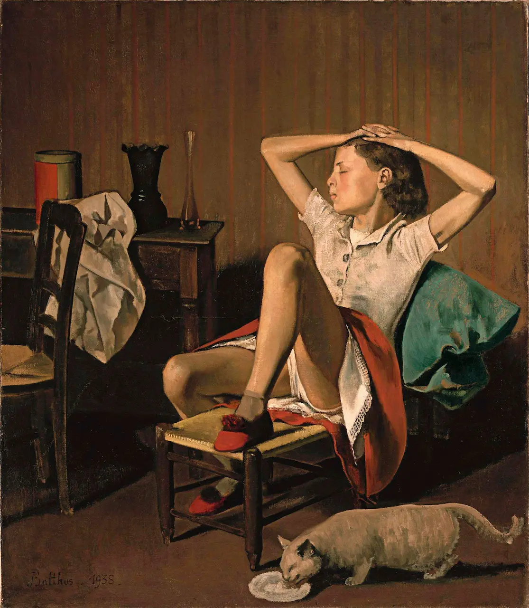
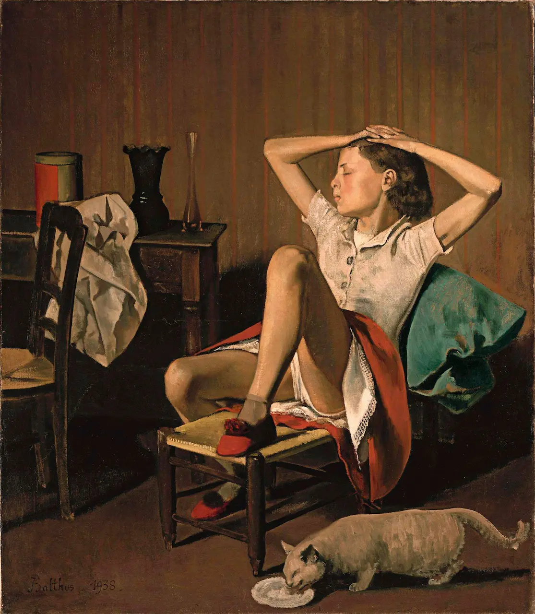

Texto sobre a recolha de histórias de famílias: no texto devemos explicar que as histórias aqui reunidas são de pessoas que já viram o filme e que depois disso partilharam algum episódio relacionado com as suas famílias aqui. Essa história é sempre acompanhada por uma fotografia de alguém, de um objecto, de uma pintura, aquilo que as pessoas sintam que faz mais sentido. Aqui também teremos de ter o mail (hiperlink) para o envio das histórias